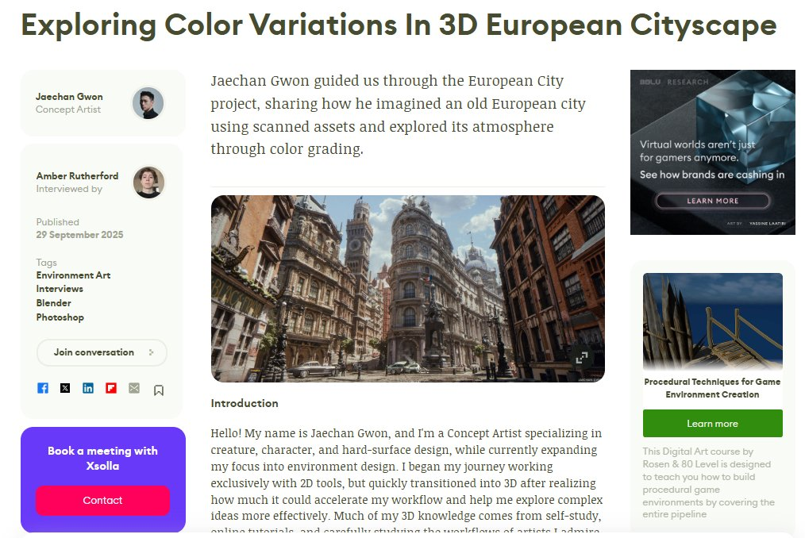

Blenderで制作されたヨーロッパの都市景観作品のプロセスを解説する80lvの記事。スキャンアセットからパーツごとのアセット制作方法などが学べる。
URL
https://80.lv/articles/exploring-color-variations-in-3d-european-cityscape

Blenderで制作されたヨーロッパの都市景観作品のプロセスを解説する80lvの記事。スキャンアセットからパーツごとのアセット制作方法などが学べる。